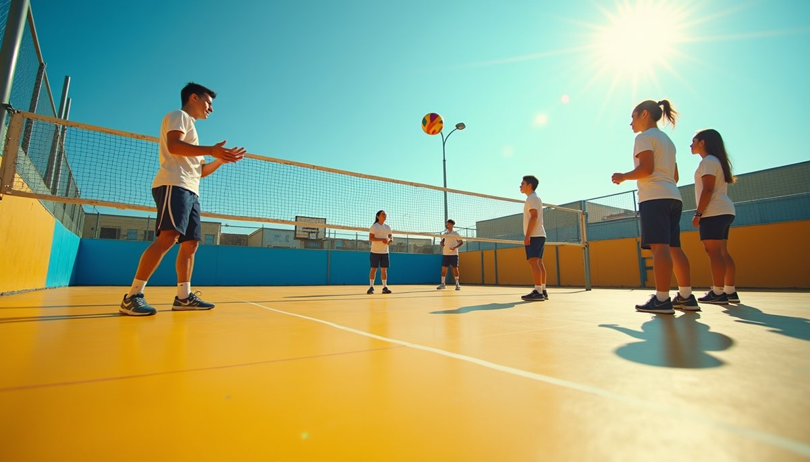

Empowering Youth for College through Volleyball Mentorship

In the realm of youth empowerment and mentorship programs, there lies a uniquely impactful initiative known as Beyond the Net. This organization, rooted in the love for volleyball, has blossomed into a beacon of guidance for high school students on their journey towards college and leadership.
At its core, Beyond the Net stands as a supportive force for young individuals, offering tailored mentorship for college applications and fostering the growth of leadership skills within their local communities. By intertwining the passion for volleyball with the pursuit of higher education, this program not only aids students in achieving their academic dreams but also equips them with valuable life skills that will serve them well beyond the confines of a classroom.
Catering to middle and high school students, Beyond the Net has crafted a virtual haven on their website where interested individuals can effortlessly sign up for the program. Furthermore, visitors to the site can delve into a wealth of information about the initiative, gaining insights into its core values and the remarkable work it has accomplished thus far.
Unlike other organizations, Beyond the Net's website has a singular focus – to empower youth for college through volleyball mentorship. Straying away from conventional aims like fundraising or merchandise sales, the organization remains steadfast in its mission to uplift the next generation of leaders and scholars.
As students navigate the tumultuous waters of college applications and personal development, Beyond the Net stands as a steadfast partner, guiding them towards brighter futures. Through the transformative power of mentorship and the unity forged in the love for volleyball, this organization is paving the way for a generation of empowered youth ready to take on the world.